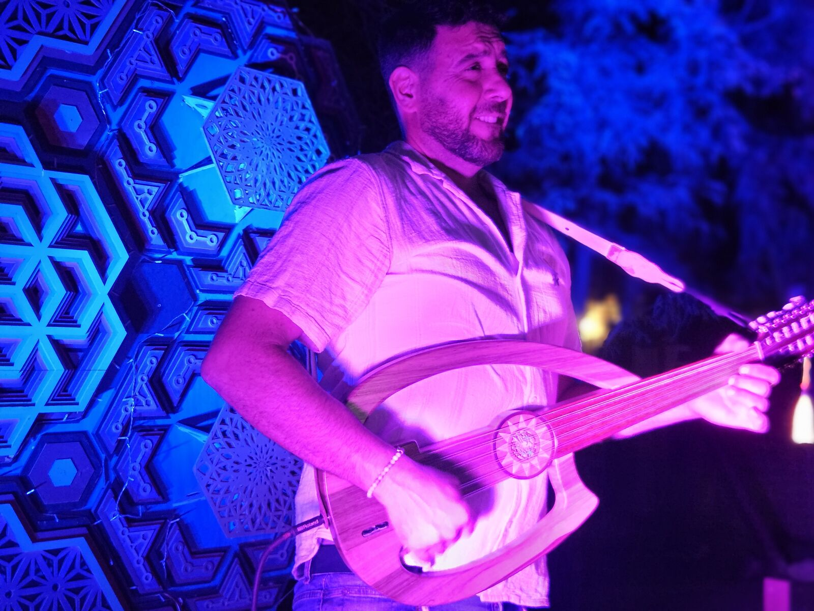
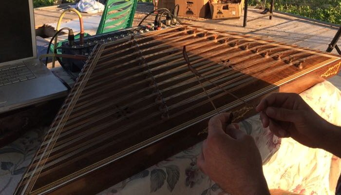
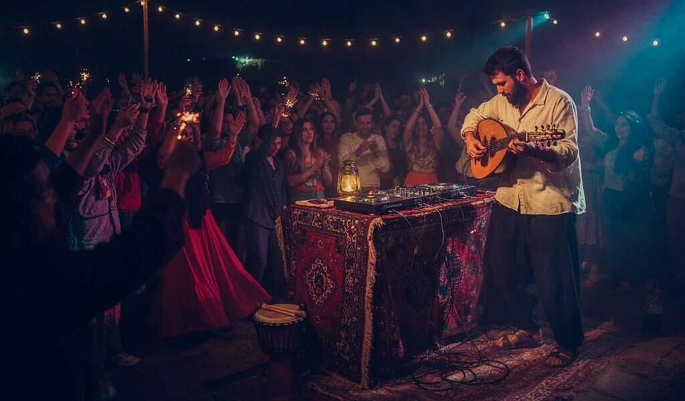
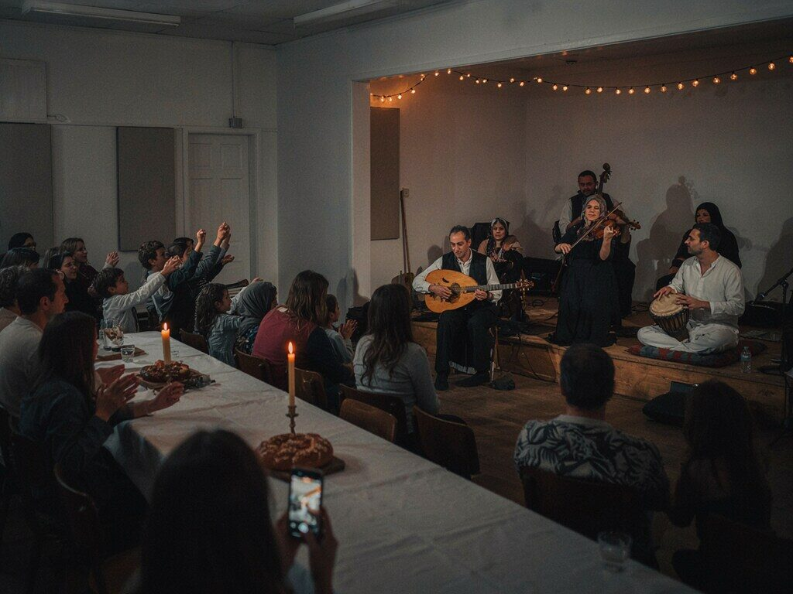

מוזיקה שמחברת אנשים
מוזיקאי רב־כלי, מורה לתיפוף כבר 22 שנה ומרפא בצלילים. סדנאות, מופעים וחוויות קצב לילדים ולמבוגרים, בכל הארץ.
כל הפעילויות
בחרו קהל, ומצאו את מה שמתאים לכם. לכל פעילות יש דף עם כל הפרטים.
קורס דרבוקה מקוון
שיטת 8 היכולות: מאפס ועד ליווי שיר שלם
לפרטים ←
אלקטרו הילינג
מסע פנימה דרך מוזיקה חיה, תדרים וקצב
לפרטים ←
סדנת קצב: דרבוקות וכלי הקשה
כל הקבוצה מתופפת יחד, מהדקה הראשונה
לפרטים ←
סדנת קצב באולטרה סגול
מתופפים בחושך, והכול זוהר
לפרטים ←
איך צליל נולד?
סדנת אומן על תחילת הצליל בעולם
לפרטים ←
DJ Borich
די־ג'יי עם נגינה חיה: מוזיקת עולם וטרנס
לפרטים ←
מופע קבלת שבת
שירי שבת בגרסאות מיוחדות ושמחות
לפרטים ←
שירה בציבור עם סדנת קצב
הקהל שר, מתופף ומשתתף
לפרטים ←
חבילות לקייטנות
יום פעילות שלם, מספק אחד
לפרטים ←יום הולדת עם תופים
סדנת קצב שמח לגילאי 3–7
לפרטים ←סדנת קצב לחברות ולגיבוש
צוות אחד, מקצב אחד
לפרטים ←ללמוד דרבוקה מהבית, בשיטה מסודרת
קורס מוקלט שלוקח אותך צעד אחר צעד, מהרגע הראשון שהדרבוקה על הרגל ועד שאתה מלווה שיר שלם עם 3 מקצבים ומעברים. לומדים מהבית, בקצב שלך.
שיטת 8 היכולות
- הדרבוקה נהיית חלק ממך
- הצלילים הבסיסיים
- המקצב הראשון
- בלדי
- מקסום ועיוב
- מעברים
- מילויים
- מלווים שיר שלם
ברוך חזן
"אני מוזיקאי בלב ובנשמה. אני מרפא בצלילים."
אני מולטי־אינסטרומנטליסט, כלומר אני מנגן על הרבה כלים: עוד בסגנון ערבי, אנדלוסי ומרוקאי, ג'מבה בסגנון אפריקאי, אנדלוסי וערבי, דרבוקה ערבית ואנדלוסית, וסנטור: מוזיקת פיוז'ן, מוזיקת עולם מאוד רגשית.
התחלתי כמתופף, ואני מתופף כבר הרבה שנים. על הסנטור אני מנגן כעשר שנים, ועל העוד בחמש השנים האחרונות. למדתי מוזיקה שלוש שנים במקאמאת, וסיימתי ב־2023. אני שומע טוב ומשתלב בלהקות.
כבר 22 שנה אני מלמד תיפוף. לימדתי מגיל הגן ועד התיכון, ואני מופיע ומנחה סדנאות בכל הארץ: בבתי ספר, בגנים, במתנ"סים, במועצות, בקיבוצים ובחברות.
ויום אחד, בנסיעה במכונית, תרגלתי מרווחים במוזיקה. שרתי תו אחד לאורך זמן, ואחרי כמה דקות עברתי לתו אחר. קלטתי שבכל מעבר משתנים בי רגשות, כאילו נכנסתי לחדר אחר, עם תחושות אחרות. התחלתי לחקור את זה עוד ועוד, וגיליתי את הכוח של הצלילים.
מזה נולדה סדנת האלקטרו הילינג. אני מחבר בה בין צלילים חיים, מוזיקה אלקטרונית וצלילים של מסורות עתיקות, ניגונים ששימשו לתפילות.
ילדים בסדנת קצב, קהל בקבלת שבת, רחבה של מאות אנשים באלקטרו הילינג, או מי שלומד דרבוקה מהבית: לכל אחד מהם אני מביא את אותו הדבר, מוזיקה חיה מהלב.
שלושה צעדים, וזה סגור
שולחים הודעה
בוואטסאפ או בטופס: מה אתם מתכננים, מתי ואיפה.
מקבלים הצעה
ברוך חוזר אליכם עם הצעה שמתאימה לקהל ולמקום.
מתופפים
ברוך מגיע עם הכלים וההגברה. אתם רק נהנים.
בואו נדבר על האירוע שלכם
ספרו לי מה אתם מתכננים: מי הקהל, כמה משתתפים ואיפה. אחזור אליכם עם הצעה שמתאימה בדיוק לכם.
ככה זה נשמע ונראה
סרטונים אחרונים מהאינסטגרם ומהפייסבוק: סדנאות, אלקטרו הילינג, הופעות וקטעים מהקורס.